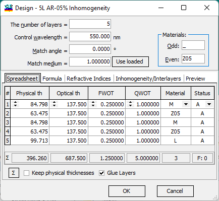
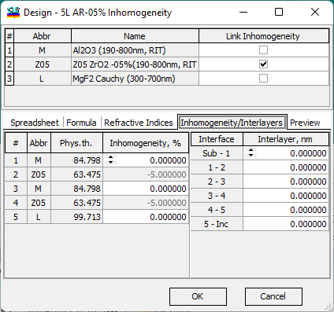

Design Inhomogeneities/Interlayers
Design Inhomogeneities/Interlayers
Navigation: OptiLayer Menu Commands > Data Menu > Design Database > Design Editor >
Design Inhomogeneities/Interlayers
` <idh_layer_status.html>`__ ` <idh_design_editor.html>`__ ` <stack_database.html>`__
In OptiLayer, it is also possible to edit Inhomogeneities and Interlayers associated with a design.
For this purpose, the Design Editor has Inhomogeneity/Interlayers tab. Consider a 5-layer anti-reflection coating:

The “Inhomogeneities/Interlayers” tab allows users to control the links between layer material inhomogeneities and to specify inhomogeneities and interlayers on a layer-by-layer basis. This correction offers a clearer explanation of the tab’s functionality, focusing on its capacity to manage relationships between material inhomogeneities and the detailed specification of inhomogeneities and interlayers for individual layers.

The upper part of this tab displays all layer materials used in the current design. It allows users to control whether the layer inhomogeneity is linked to the inhomogeneity of the respective layer material. If a link is active, the corresponding cells in the lower part become disabled, and the inhomogeneity values are derived from the inhomogeneity parameters of the inhomogeneity parameters of the loaded material.
If a link is inactive, inhomogeneity levels can be edited independently for each layer.

Note 1: Inhomogeneities and interlayers are considered only when the Inhomogeneity/Interlayers mode is activated.

Note 2: The Monitoring Spreadsheet currently operates with homogeneous layers only; therefore, the Inhomogeneity/Interlayers mode is not taken into account in OptiMonitor.